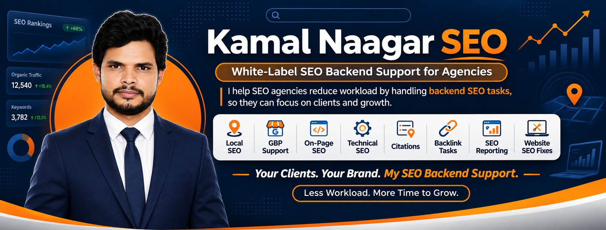

Local SEO Support
Location-focused SEO tasks, page optimization, service-area content support, and local visibility workflows.
Choose the backend SEO tasks you need help with. The work stays aligned with your client priorities, processes, and agency brand.

 Backend support tailored to agency workflows.
Backend support tailored to agency workflows.Location-focused SEO tasks, page optimization, service-area content support, and local visibility workflows.
Profile content, category and service reviews, updates, and ongoing GBP task coordination.
Page titles, headings, internal linking, content edits, and WordPress implementation.
Practical checks and fixes for crawlability, metadata, indexing signals, and common website issues.
Local citation research, consistency checks, and structured backlink-related task execution.
Organized task tracking, reporting inputs, and repeatable execution that supports your agency workflow.
Share priorities, assets, access, and task notes. The execution stays organized and agency-friendly.
Use one backend support partner for recurring SEO work that needs consistency, follow-through, and clean delivery.